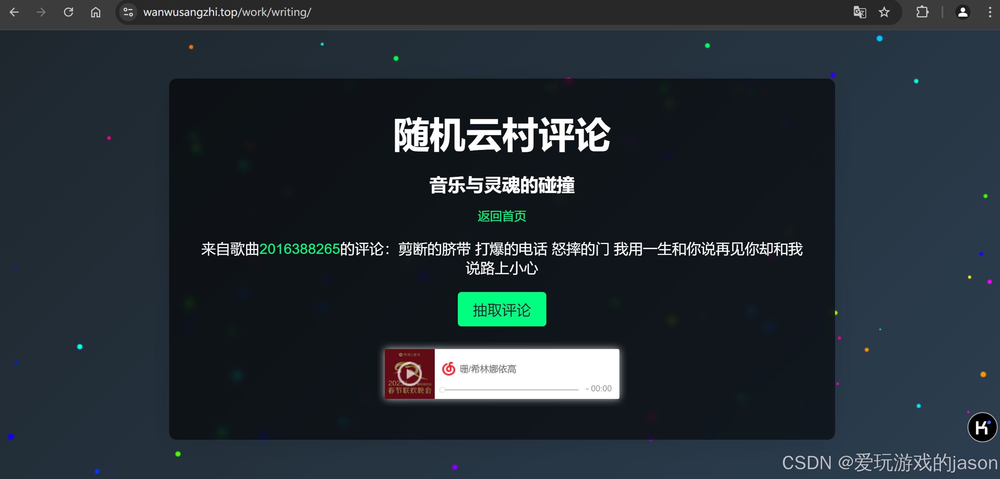
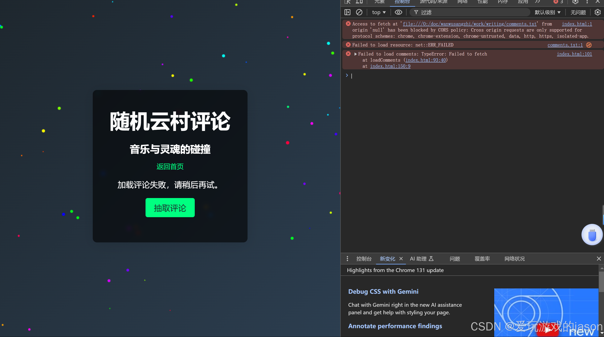

代码链接  不说废话，上代码！！！
# get.py
import urllib.request
import urllib.error
import urllib.parse
import json
# 抓取网易云音乐指定url的热评
def get_hotComments(id):
url = 'https://music.163.com/weapi/v1/resource/comments/R_SO_4_'+id+'?csrf_token=' # 歌评url
header = {'User-Agent': "Mozilla/5.0 (Windows NT 6.1; WOW64) AppleWebKit/537.1 (KHTML, like Gecko) Chrome/22.0.1207.1 Safari/537.1"}
# post请求表单数据
data = {'params':'LPkOcWb/uz2Nj6xw+RFhGJ1PkFi4+lh4agK+1jRGmjMAiOcJ5RHxQBbZa+aME54AUdi21JkqLu/yeHjjIaLQJ4wzqiuzrzYUKciRCqmCDX9ziKoktv5mgvvlA5+A9a7kUF5pabudBaWjsut+9T5kfHQBv75fIcDRt/Anyb8FnG/Ro6R8IStD0/JknFvH5+3S',
'encSecKey':'5627cc7941cf4cbd59b13668efe38a622ed0889d33cdcf603d18b025eb34ac434c882ed5ad16ca06e88e40a8b91de455483d0b88b6b460ca146b163e67ebab688b2feb4f22369db85a926744bad9114d3cddd00ca6255d7cdcad6cf7b9300a6fdf49adf983087cd830131fabbac39ec4a526432958309cf92c0b5a6bc177078b'}
postdata = urllib.parse.urlencode(data).encode('utf8') # 进行编码
request = urllib.request.Request(url, headers=header, data=postdata)
response = urllib.request.urlopen(request).read().decode('utf8')
json_dict = json.loads(response) # 获取json
hot_comment = json_dict['hotComments'] # 获取json中的热门评论
print(id)
num = 1
for item in hot_comment:
printer1=item['content']
with open("comments.txt","a",encoding='utf-8') as f:
f.write('id : '+id+' : '+printer1)
f.write("\n")
f.close()
print('id : '+id+' '+'第%d条评论：' % num+printer1)
num += 1
if __name__ == '__main__':
id=input()
get_hotComments(id)
import get as g
n=int(input())
while 1:
g.get_hotComments(str(n))
n=n+1
注：n为网易云音乐歌曲id。 例如：网易云音乐链接：https://music.163.com/#/song?id=2016388286 id为2016388286 id通常为8位-10位数字。 结尾附上部分comments.txt文件
重头戏来了！
<!DOCTYPE html>
<html lang="en">
<head>
<meta charset="UTF-8">
<meta name="viewport" content="width=device-width, initial-scale=1.0">
<title>随机云村评论</title>
<style>
body {
margin: 0;
padding: 0;
font-family: 'Arial', sans-serif;
background: linear-gradient(135deg, #1e272e, #2c3e50);
color: #ffffff;
overflow-x: hidden;
display: flex;
justify-content: center;
align-items: center;
height: 100vh;
text-align: center;
}
.container {
max-width: 800px;
padding: 40px;
border-radius: 10px;
background: rgba(0, 0, 0, 0.6);
box-shadow: 0 4px 30px rgba(0, 0, 0, 0.1);
backdrop-filter: blur(5px);
}
.container h1 {
font-size: 3rem;
margin: 0 0 20px;
}
.container h2 {
font-size: 1.5rem;
margin: 0 0 15px;
}
.container p {
font-size: 1.2rem;
margin: 20px 0;
}
.button {
padding: 10px 20px;
background: #00ff80;
border: none;
border-radius: 5px;
font-size: 1.2rem;
color: #1e272e;
cursor: pointer;
transition: transform 0.3s ease, background 0.3s ease;
}
.button:hover {
background: #00e676;
transform: scale(1.1);
}
a {
color: #00ff80;
text-decoration: none;
transition: color 0.3s ease;
}
a:hover {
color: #00e676;
text-decoration: underline;
}
.particles {
position: fixed;
top: 0;
left: 0;
width: 100%;
height: 100%;
z-index: -1;
}
.music-player {
margin-top: 20px;
}
</style>
</head>
<body>
<canvas class="particles"></canvas>
<div class="container">
<h1>随机云村评论</h1>
<h2>音乐与灵魂的碰撞</h2>
<a href="/">返回首页</a>
<p id="comment">点击按钮随机抽取一条评论</p>
<button class="button" onclick="fetchRandomComment()">抽取评论</button>
<div class="music-player" id="musicPlayer"></div>
</div>
<script>
let comments = [];
// 从服务器加载评论文件
async function loadComments() {
try {
const response = await fetch('comments.txt');
if (!response.ok) {
throw new Error('Failed to fetch comments');
}
const fileContent = await response.text();
comments = parseComments(fileContent);
document.getElementById('comment').textContent = "点击按钮随机抽取一条评论";
} catch (error) {
console.error("Failed to load comments:", error);
document.getElementById('comment').textContent = "加载评论失败，请稍后再试。";
}
}
// 解析评论内容
function parseComments(fileContent) {
const lines = fileContent.split('\n');
const parsedComments = [];
let currentComment = null;
lines.forEach(line => {
const trimmedLine = line.trim();
if (trimmedLine === "") return;
const parts = trimmedLine.split(' : ');
if (parts.length >= 3) {
if (currentComment) {
parsedComments.push(currentComment);
}
currentComment = { id: parts[0].trim(), number: parts[1].trim(), content: parts.slice(2).join(' : ').trim() };
} else if (currentComment) {
currentComment.content += "\n" + trimmedLine;
}
});
if (currentComment) {
parsedComments.push(currentComment);
}
return parsedComments;
}
// 随机抽取评论
function fetchRandomComment() {
if (comments.length === 0) {
loadComments();
return;
}
const randomIndex = Math.floor(Math.random() * comments.length);
const comment = comments[randomIndex];
const songUrl = `https://music.163.com/#/song?id=${comment.number}`;
document.getElementById('comment').innerHTML = `来自歌曲<a href="${songUrl}" target="_blank">${comment.number}</a>的评论：${comment.content}`;
const musicPlayerDiv = document.getElementById('musicPlayer');
musicPlayerDiv.innerHTML = `<iframe frameborder="no" border="0" marginwidth="0" marginheight="0" width="330" height="86" src="//music.163.com/outchain/player?type=2&id=${comment.number}&auto=1&height=66"></iframe>`;
}
// 初次加载时尝试加载评论
loadComments();
// 粒子效果
document.addEventListener('DOMContentLoaded', () => {
const canvas = document.querySelector('.particles');
const ctx = canvas.getContext('2d');
canvas.width = window.innerWidth;
canvas.height = window.innerHeight;
window.addEventListener('resize', () => {
canvas.width = window.innerWidth;
canvas.height = window.innerHeight;
});
const particles = [];
class Particle {
constructor(x, y, color) {
this.x = x;
this.y = y;
this.color = color;
this.size = Math.random() * 3 + 1;
this.speedX = Math.random() * 2 - 1;
this.speedY = Math.random() * 2 - 1;
}
draw() {
ctx.fillStyle = this.color;
ctx.beginPath();
ctx.arc(this.x, this.y, this.size, 0, Math.PI * 2);
ctx.fill();
}
update() {
this.x += this.speedX;
this.y += this.speedY;
if (this.x < 0 || this.x > canvas.width) this.speedX *= -1;
if (this.y < 0 || this.y > canvas.height) this.speedY *= -1;
}
}
function createParticles() {
for (let i = 0; i < 100; i++) {
const x = Math.random() * canvas.width;
const y = Math.random() * canvas.height;
const color = `hsl(${Math.random() * 360}, 100%, 50%)`;
particles.push(new Particle(x, y, color));
}
}
createParticles();
function animate() {
ctx.clearRect(0, 0, canvas.width, canvas.height);
particles.forEach(particle => {
particle.draw();
particle.update();
});
requestAnimationFrame(animate);
}
animate();
});
</script>
</body>
</html>
格式 :
id : $id : $comment
部分评论 comments.txt https://github.com/fjsje/wanwusangzhi/blob/main/work/writing/comments.txt
先打开index.py，输入起始歌曲id。
抓取足够多的评论后，打开index.html
注意：index.html 请在服务器上部署才能抓取comments.txt成功，否则会出现以下情况：

点赞加关注，精彩不迷路！